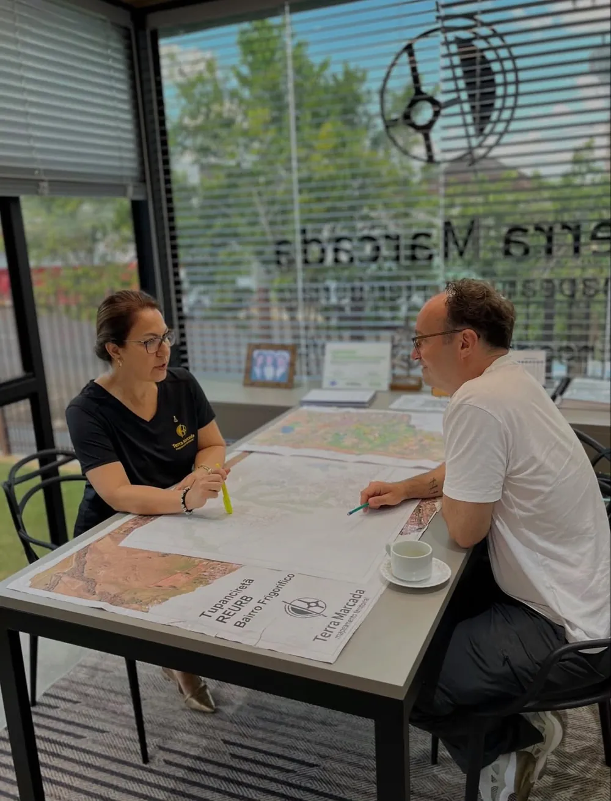
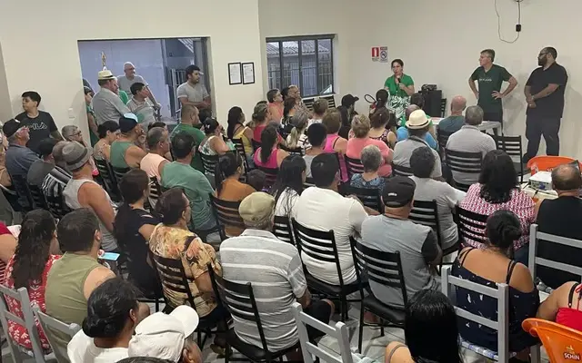
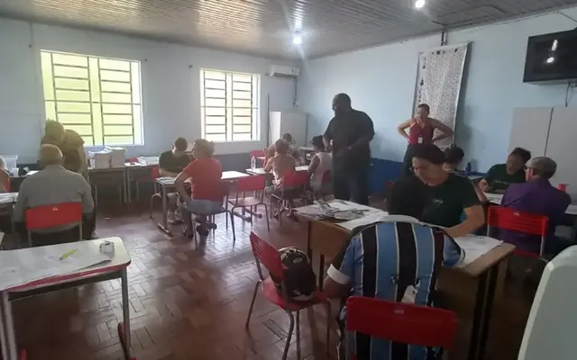
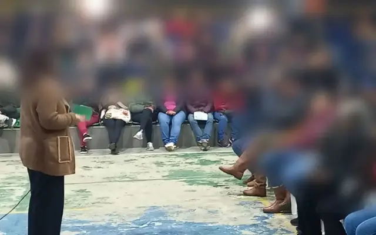
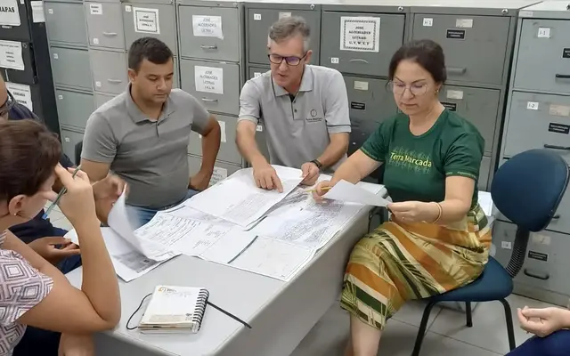
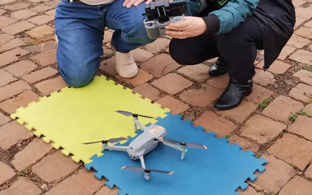
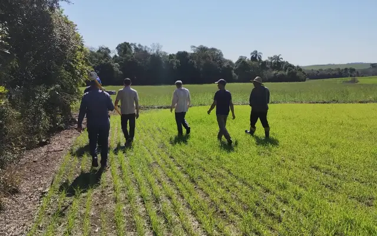
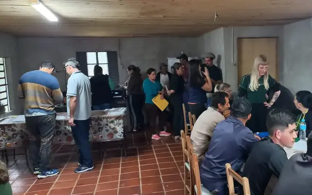

Regularização Fundiária (REURB)
Conduzimos todo o processo de REURB-S e REURB-E: diagnóstico, levantamentos, projeto, articulação com a prefeitura e acompanhamento até o registro dos títulos.
Saiba como funcionaMapeamento territorial com drone e GNSS, regularização de imóveis e REURB em Ijuí e região.
O drone sobrevoa o bairro e registra cada quadra e cada lote em alta resolução. É o ponto de partida do mapeamento.
Os marcos recebem coordenadas e a divisa fecha, ponto a ponto, no lugar certo.
Área, perímetro e confrontações, prontos para projeto, venda ou documentação.

Na primeira conversa, abrimos as plantas e as imagens da sua área e mostramos o que está regular, o que falta e qual é o melhor caminho. Sem termos complicados e sem compromisso.
Reunimos técnica, tecnologia e conhecimento jurídico-urbanístico para deixar cada imóvel medido, documentado e regular.
Conduzimos todo o processo de REURB-S e REURB-E: diagnóstico, levantamentos, projeto, articulação com a prefeitura e acompanhamento até o registro dos títulos.
Saiba como funcionaCadastro e mapeamento de áreas urbanas e rurais, bases cartográficas e diagnósticos para planejamento e tomada de decisão.
Levantamentos topográficos e cadastrais, com alta precisão para projetos, obras e documentação.
Ortofotos, modelos digitais de terreno e nuvens de pontos para mapear grandes áreas com rapidez e alto nível de detalhe.
Georreferenciamento conforme as normas do INCRA, certificação no SIGEF e apoio ao CAR e demais cadastros rurais.
Plantas, memoriais descritivos, desmembramento, unificação, retificação de área e peças técnicas para usucapião.
REURB é a Regularização Fundiária Urbana, instituída pela Lei Federal nº 13.465/2017. É o conjunto de medidas jurídicas, urbanísticas, ambientais e sociais que transforma núcleos urbanos informais — bairros, loteamentos e ocupações sem documentação — em áreas regulares, garantindo aos ocupantes o título de propriedade registrado em cartório.
Para núcleos ocupados predominantemente por população de baixa renda, assim declarados pelo município.
Para os demais casos, quando os ocupantes não se enquadram como baixa renda.
Analisamos a área, a documentação existente e definimos a modalidade. O pedido é protocolado no município.
Topografia, cadastro físico dos lotes e cadastro social dos ocupantes.
Elaboramos plantas, memoriais descritivos e os estudos exigidos pela lei.
Notificação de confrontantes, saneamento do processo e aprovação pela prefeitura.
O município emite a CRF, documento que reconhece a regularização do núcleo.
A CRF e o projeto são registrados e cada lote recebe sua matrícula. O título é entregue ao morador.
Não sabe se o seu imóvel ou bairro pode ser regularizado? A gente avalia com você.
Falar no WhatsAppAlguns dos projetos que realizamos. Cada um representa famílias com documento na mão e áreas planejadas com segurança.

Apresentação do projeto de regularização aos moradores do núcleo, com explicação de cada etapa até o documento.

Atendimento aos moradores do núcleo, com conferência de plantas e documentos para a regularização.

Projeto de regularização fundiária urbana, com levantamento, cadastro e plantas do bairro.
Projeto de regularização fundiária do núcleo, com levantamento, cadastro e plantas.
Projeto de regularização fundiária do núcleo, com levantamento, cadastro e plantas.
Projeto de regularização fundiária do núcleo, com levantamento, cadastro e plantas.
Projeto de regularização fundiária do núcleo, com levantamento, cadastro e plantas.

Reunião técnica com representantes do poder público para alinhar o projeto e os documentos da regularização.

Ortofoto de alta resolução e modelo digital de terreno para planejamento urbano.

Georreferenciamento e certificação no SIGEF/INCRA com apoio ao registro.
Projeto urbanístico, memoriais e acompanhamento até a emissão da CRF e o registro.
Levantamento cadastral e curvas de nível para projeto de engenharia e obra.

Atendimento aos moradores para cadastrar cada imóvel, com formulários e documentos conferidos na hora.
Não encontrou o que procurava? Conte seu caso e respondemos sem compromisso.
Falar no WhatsAppNa maioria dos casos, sim. O contrato, recibos, contas de consumo e outros documentos ajudam a comprovar a posse. Avaliamos sua situação e indicamos o melhor caminho: REURB, usucapião ou outro instrumento.
Depende do tamanho da área, da documentação existente e do andamento na prefeitura e no cartório. No primeiro atendimento apresentamos uma estimativa realista para o seu caso.
A lei permite que o pedido seja feito pelo município, pelos próprios moradores (individual ou coletivamente), por associações e cooperativas, pela Defensoria Pública, pelo Ministério Público, entre outros legitimados.
Sim. Realizamos georreferenciamento, certificação no SIGEF/INCRA, levantamentos topográficos e apoio ao Cadastro Ambiental Rural (CAR).
É só chamar no WhatsApp. Ouvimos sua necessidade, pedimos as informações básicas do imóvel e agendamos uma conversa ou visita técnica, sem compromisso.
O seu cálculo e o seu procedimento estão em mãos profissionais.